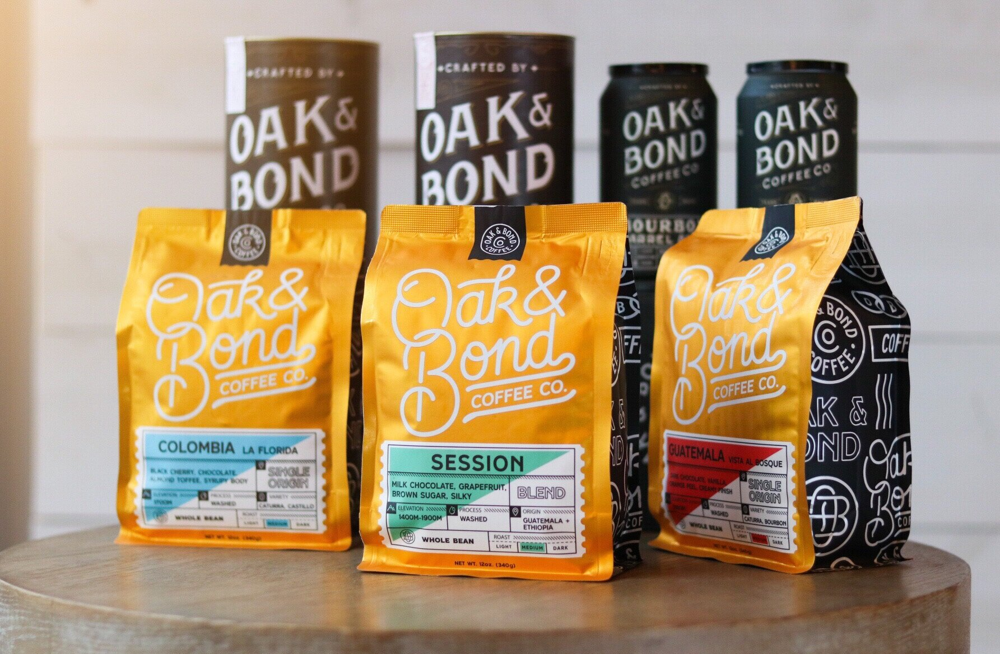

Pete's Holiday Bourbon Gift Guide
While I can't help you find BTAC or Pappy for anything less than a car payment, I can help you with a few whiskey-centric gifts that are affordable and available. Also, I like to make this list so that people don't get you whiskey stones. Don't get whiskey stones.

- For the whiskey loving boss you need to impress:This one always depends on the boss, but I would think a bottle of the Texas SamuRye would show you are fine, worldly employee. Great bosses deserve unfiltered, Sagamore greatness. However, if you don't want to hand your boss some booze and would rather keep it for yourself, check out Oak & Bond Barrel Aged Coffee. Delicious coffee that I guarantee they've never had.
- For the whiskey lover who has everything: Del Maguey Pechuga Mezcal or the outstanding Foursquare Rum. Both fantastic products that will give the snob in your life something new to try.
- For the Bourbon Newbie: Four Roses Small Batch Select. Priced just right and you can find it in most places. The different blends in here should get them excited about Four Roses and what each recipe can do
- For the chocolate loving spouse in your life: Art Eatables is a fantastic shop in Louisville that does some of the finest bourbon balls in the world. A couple dozen of these should help them forget about all those bottles that keep showing up in the mail...
- For the Bookworm: the great Aaron Goldfarb put out a great new cocktail recipe book. Gather Round Cocktails. Goldfarb wrote about the DBC in Bourbon+ a few months back and is a regular contributor to Whiskey Advocate magazine. If you'd rather a more traditional book: I am a huge fan of reading biographies and one worth reading is Bill Samuel's Jr Autobiography. Bill is a great friend of the DBC and the guy can tell a story. This book is full of the amazing tales of his life and shows an inside look at one of the most iconic brands in bourbon.
- A little something for yourself: Our pals at the Bourbon Pursuit podcast turned me onto this one. The Travel Decanter from Aged & Ore. This beauty is perfect for camping, tailgates, travel. I want one!! Tell them you heard about it on Bourbon Pursuit.